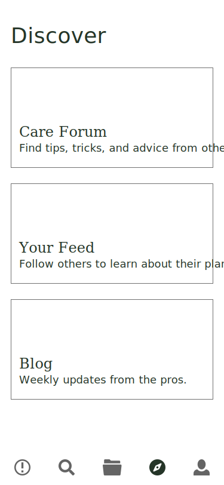
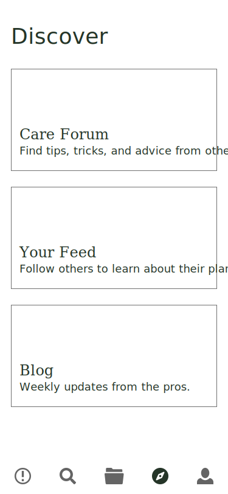

Summary
The Problem: Plant owners can experience roadblocks when figuring out the
best way to keep plants healthy and happy. Whether they have a new plant they are unfamiliar with,
or they're new to the world of plant ownership or working with an unfamiliar breed of plant, finding
information on care can be difficult to
find.
Our Solution: SOLi was designed to help plant owners, ranging from beginner to advanced green thumbs, maintain healthy, thriving houseplants. SOLi does this by providing reminders, advice, and care direction through a user-friendly mobile app.
Role: UX Researcher, UI Designer
Tools: Adobe XD, InVision, Google Drive, Trello
Time: 3 weeks
Our Solution: SOLi was designed to help plant owners, ranging from beginner to advanced green thumbs, maintain healthy, thriving houseplants. SOLi does this by providing reminders, advice, and care direction through a user-friendly mobile app.
Role: UX Researcher, UI Designer
Tools: Adobe XD, InVision, Google Drive, Trello
Time: 3 weeks
Presentation


 
